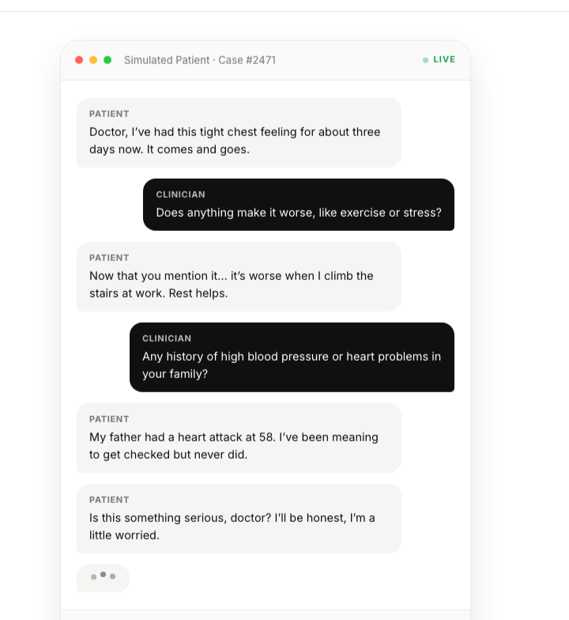

Agentic AI · Healthcare● Live
ChatGeneT
The problem: Junior doctors learn bedside reasoning on real patients: inconsistent, bottlenecked by supervisor time, and thin on the rare cases that matter most.
What changed: LLMs can now hold a realistic, multi-turn clinical conversation on demand.
Our solution: ChatGeneT, an agentic patient simulator. It orchestrates a multi-turn agent that holds memory and context across a full encounter, stays in character, adapts to the clinician's questions, and enforces clinical and factual consistency, then returns structured feedback. I owned product, evaluation, and QA.
Achievements: Live across 30+ hospitals and 500+ clinicians, at a 0.31% hallucination rate and 4.5/5 CSAT.